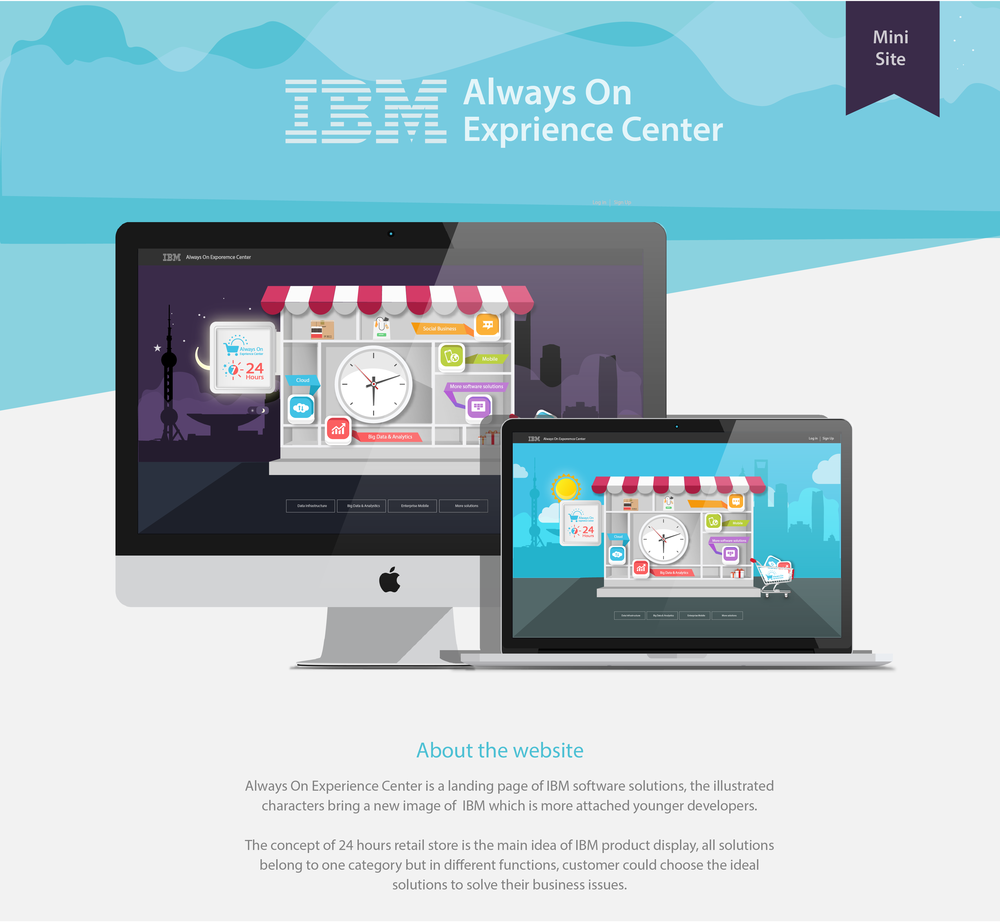
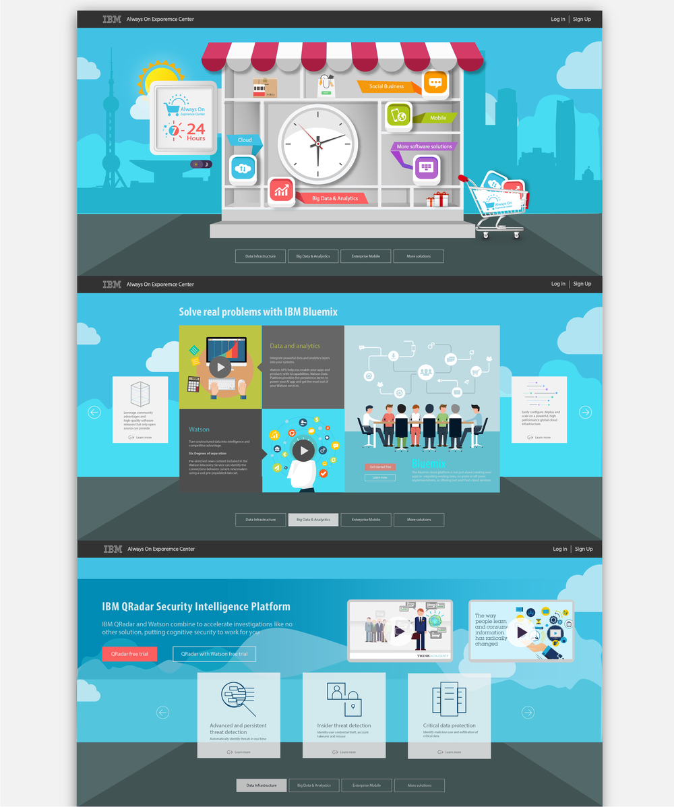
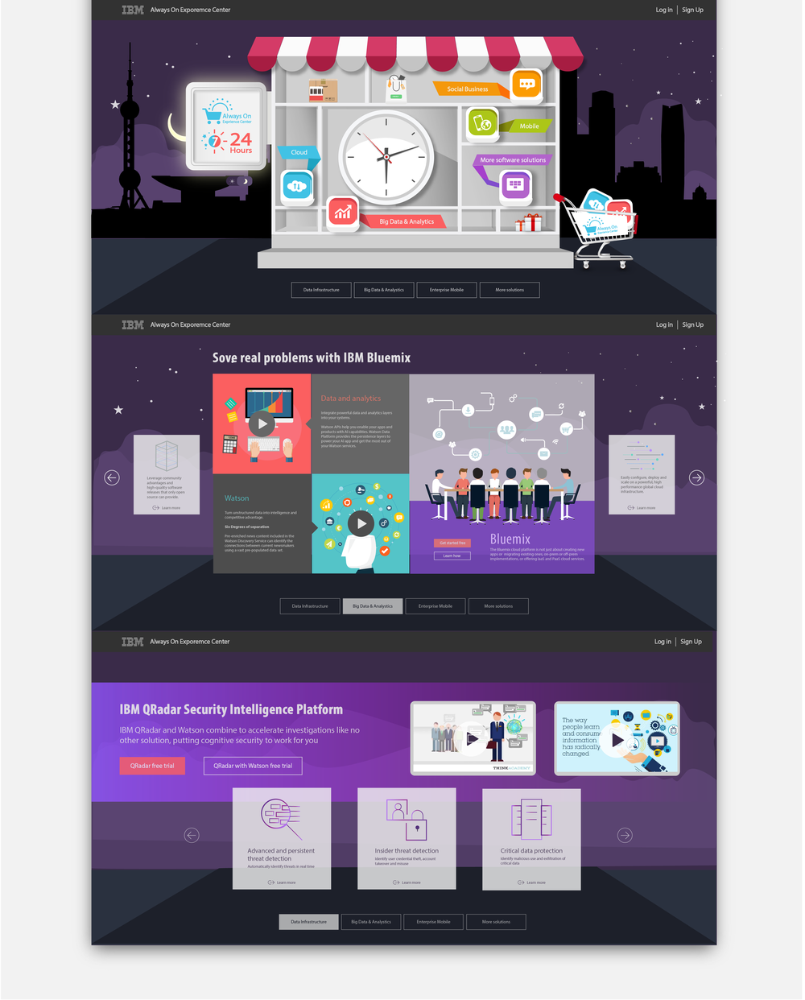
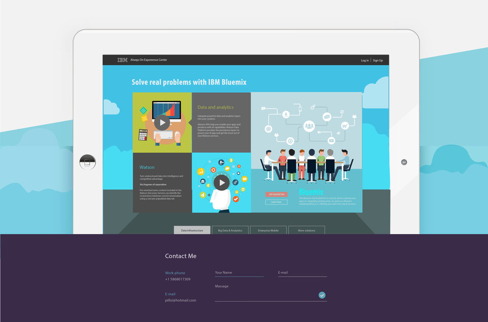

IBM Always On Center




IBM Always-On Expirence Center
Always On Experience Center is a mini site of of IBM integrated software solutions.
The purpose of this page is to help small business with their different
demands on Data Infrastructure, Big data & Analysis and Cloud Storage, etc.
The illustrated characters bring a new image of IBM which aims to atrract
younger developers to operate IBM software plaftorm like Waston and Bluemix for programming.